Assemble
Reassembly1. Set the change piece on the clutch housing.
2. Install the shift rod.
3. Install the steel ball, spring, and set bolt.
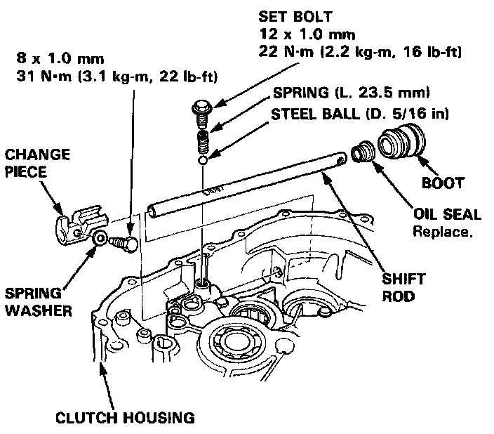
4. Install the change piece attaching bolt.
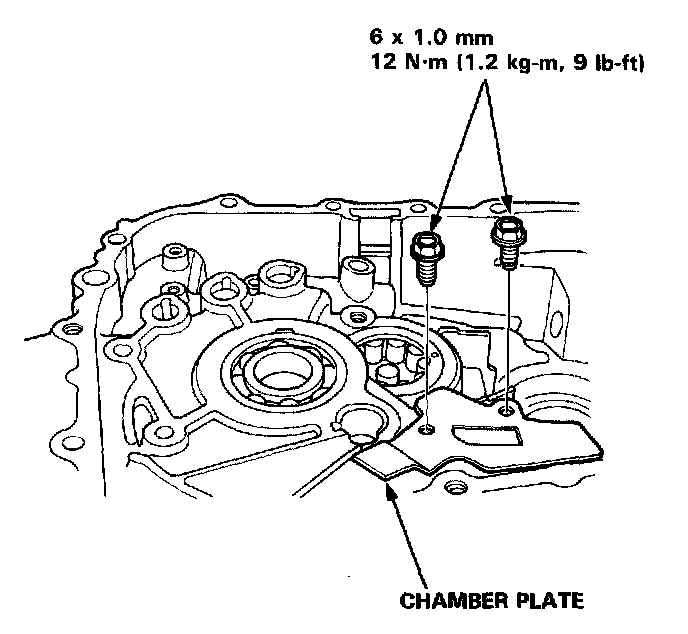
5. Install the chamber plate.
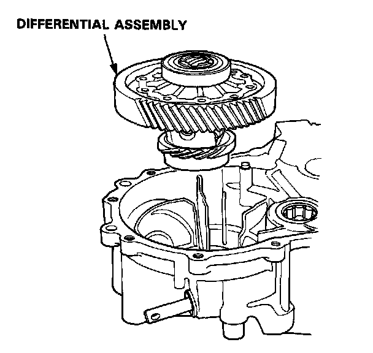
6. Install the differential assembly.
7. Set the 28 mm spring washer and washer.
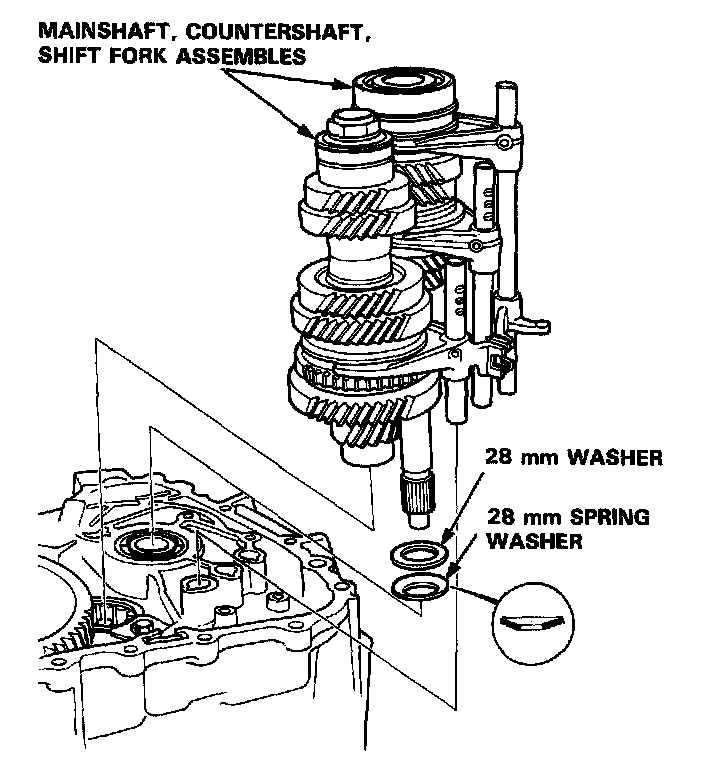
8. Install the mainshaft, countershaft, and shift fork assemblies.
NOTE: Align the finger of the interlock and groove of the shift fork shaft.
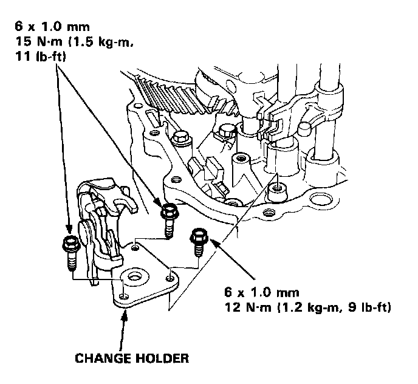
9. Install the change holder.
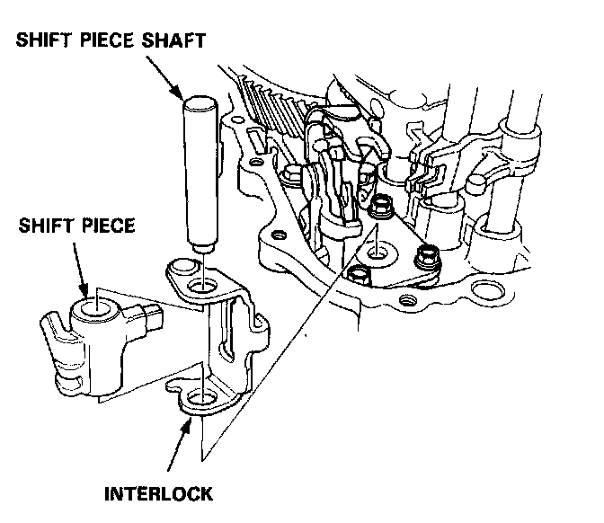
10. Install the shift piece and interlock, then install the shift piece shaft.
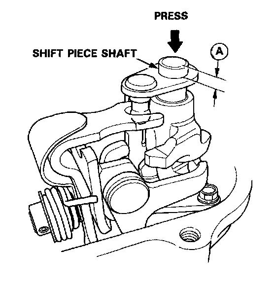
11. Apply light hand pressure to the shift piece shaft and measure distance (A). If the distance is not correct, check installation.
Distance A: 11.9-12.3 mm (0.469-0.484 in)
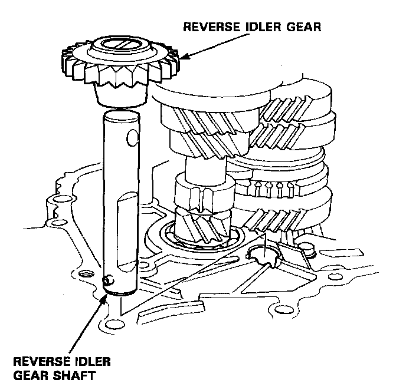
12. Shift the 3rd/4th shift fork to the 4th gear side, then install the reverse idler gear and reverse idler gear shaft.
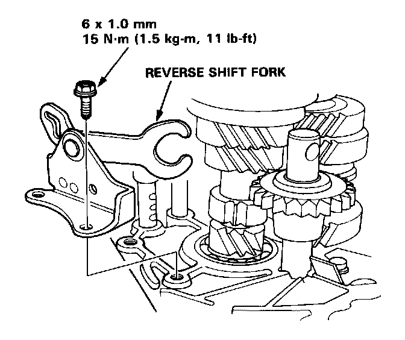
13. Install the reverse shift fork.
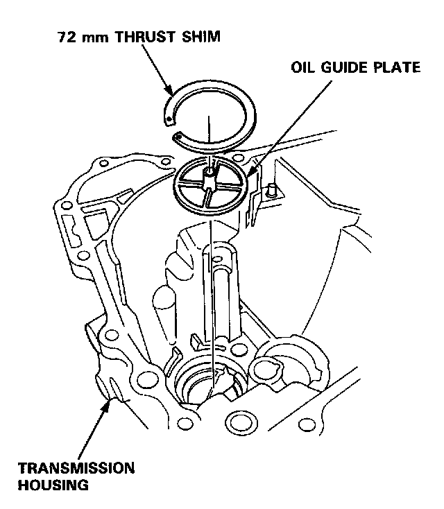
14. Install the oil guide plate and 72 mm thrust shim into the transmission housing.
15. Install the oil gutter plate.
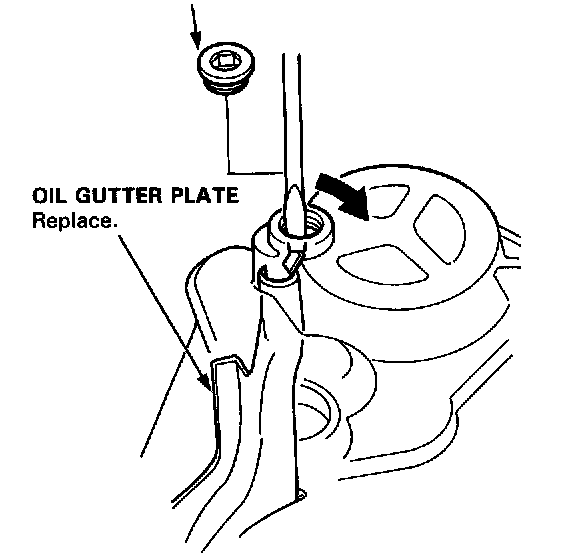
16. Bend the hook of the oil gutter plate, then install the 16 mm sealing bolt.
NOTE: Apply liquid gasket (P/N 08718-0001) to the threads.
16 mm SEALING BOLT: 30 Nm (3.0 kg-m, 22 lb-ft)
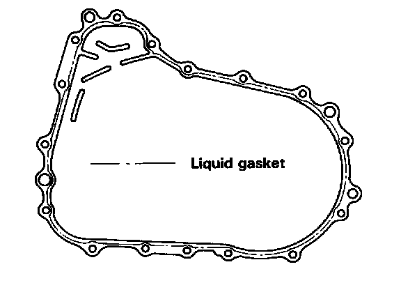
17. Apply liquid gasket to the surface of the transmission housing mating with the clutch housing as shown.
NOTE:
- Use liquid gasket (P/N 08718-0001).
- Remove the dirt oil from the sealing surface.
- Apply liquid gasket on the central part of the sealing surface.
- If 20 minutes have passed after applying liquid gasket, reapply it and assemble the housings and allow it to cure at least 30 minutes after assembly before filling transmission with oil.
18. Install the 14 x 20 mm dowel pins.
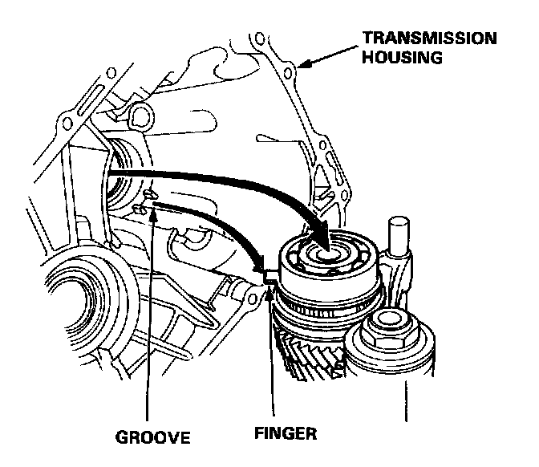
19. Install the transmission housing by aligning the groove in the transmission housing with finger on the stopper ring.
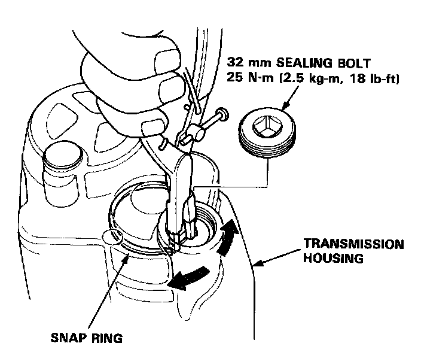
20. Lower the transmission housing with the snap ring pliers and set the snap ring in the groove of the countershaft bearing.
NOTE: Apply liquid gasket (P/N 08718-0001) to the threads of the 32 mm sealing bolt.
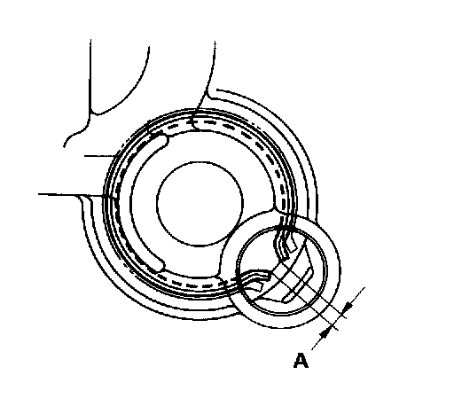
21. Check that the snap ring is securely seated in the groove of the countershaft bearing.
Dimension A as installed: 4.6-8.3 mm (0.181-0.327 in)
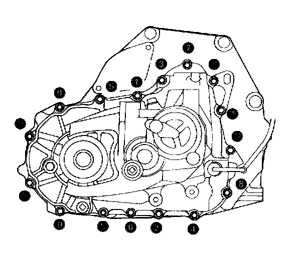
22. Tighten the transmission housing attaching bolts in a criss-cross pattern in several steps as shown in image.
8 x 1.25 mm 28 N-m (2.8 kg-m. 20 lb-ft)
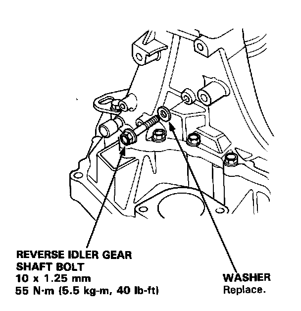
23. Tighten the reverse idler gear shaft bolt.
24. Install the steel balls, springs, and set bolts.
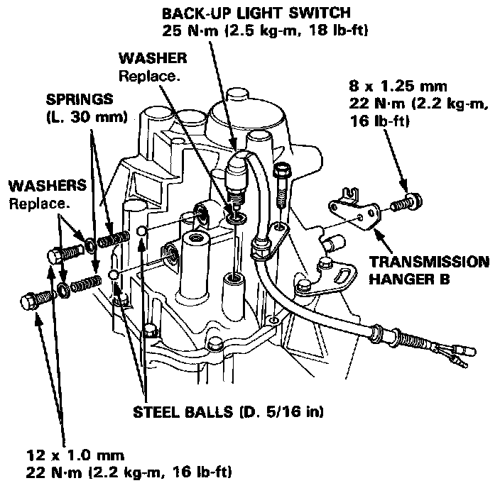
25. Install the back-up light switch and transmission hanger B.